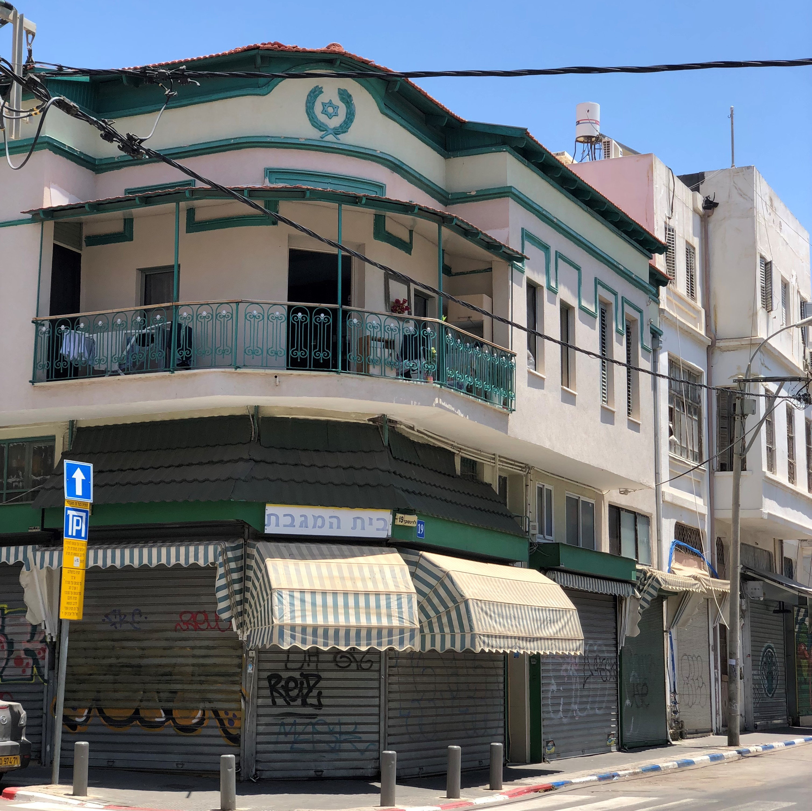
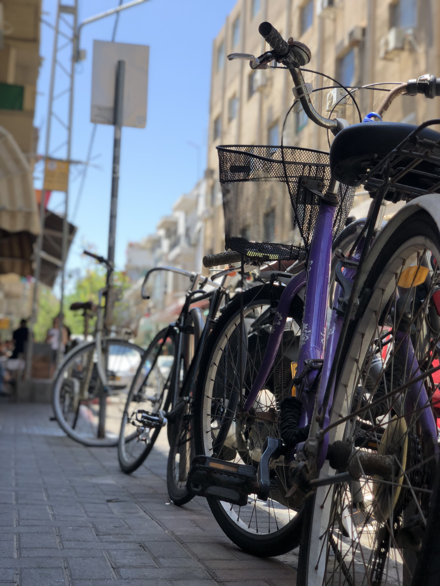

סיפורים מהמטבח פלורנטין "קיוסקו" "דדה" הכריך של הדודות נווה צדק גלידה "אניטה" המטבח התימני של ענת שכונת התקווה "סאלוף" "מלבי אקספרס" סיפורי קהילה פלורנטין שיין- אמן ומעצב סיפורה של סימה קואופרטיב "מקומי" נווה צדק גילדת הצורפים דיאנה- שגרירה של שלום שכונת התקווה האגוס- דייר חדש "על הרצף" סיפורי רחוב פלורנטין רחוב מזרחי רחוב פרנקל שדרות וושינגטון נווה צדק רחוב שלוש רחוב פינס שכונת התקווה סמטת השוק רחוב האצ"ל מפה אינטראקטיבית Your browser does not support HTML5 video. סיפורי קהילה בפלורנטין שיין, בן 27, אמן גרפי. חי ויוצר בשכונה. סיפורי קהילה בפלורנטין סימה, בת 43, דיירת רחוב. נולדה וגדלה בפלורנטין. סיפורי קהילה בפלורנטין אביב, חבר ומייסד קואופרטיב המטפלים "מקומי". ❮ ❯ סיפורים מהמטבח בפלורנטין "דדה"המאכל העברי הראשון סיפורים מהמטבח בפלורנטין קיוסקו- קפה בגובה העיניים סיפורים מהמטבח בפלורנטין הכריך של הדודות- כריך פועלים משפחתי ❮ ❯ סיפורי רחוב בפלורנטין  רחוב מזרחי- בית המגבת סיפורי רחוב בפלורנטין  שדרות וושינגטון- האחות השקטה של שדרות רוטשילד סיפורי רחוב בפלורנטין אברבנאל- הרחוב שנותן בית למשוגעים ❮ ❯